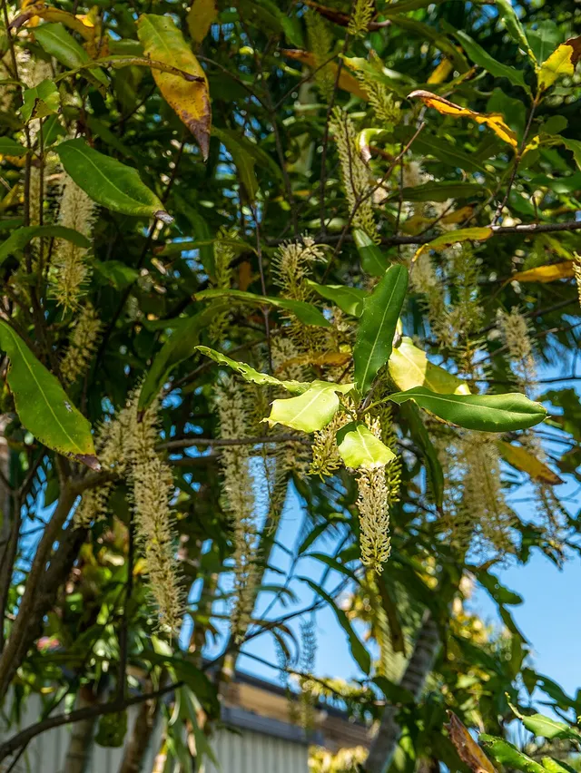

Wild nut · Mar–Aug
Macadamia
Macadamia integrifolia
Also called Macadamia, Bauple nut
Macadamia is a wild nut you can forage from March to August in Subtropical east coast. Rainforest tree with glossy, wavy-edged leaves; hard round nuts in green husks that fall when ripe.

Caution. Wild macadamias are threatened; gather only from planted trees, with permission.
When is macadamia in season in Australia?
Macadamia is usually in season March to August. Timing shifts with weather, latitude and altitude.
Where does macadamia grow in Australia?
Macadamia grows in New South Wales, Queensland. Regions: Subtropical east coast.
How do you recognise macadamia?
Rainforest tree with glossy, wavy-edged leaves; hard round nuts in green husks that fall when ripe.
How do you harvest macadamia?
Gather nuts from the ground once they fall, discarding any with holes or mould. Leave plenty for wildlife, which depends on them for winter.
How do you eat macadamia?
Raw, roasted, in baking.
How do you store macadamia?
Dry in shell for weeks, then crack.
What is macadamia good for?
Fat, Calories, Protein.
What can you cook with macadamia?
- Macadamia and wattleseed ice cream: Coffee-like wattleseed custard with toasted macadamias.